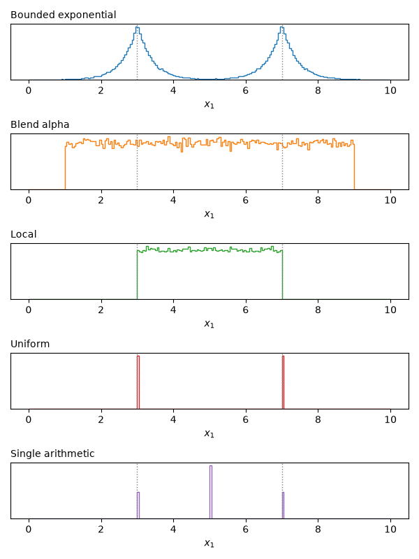
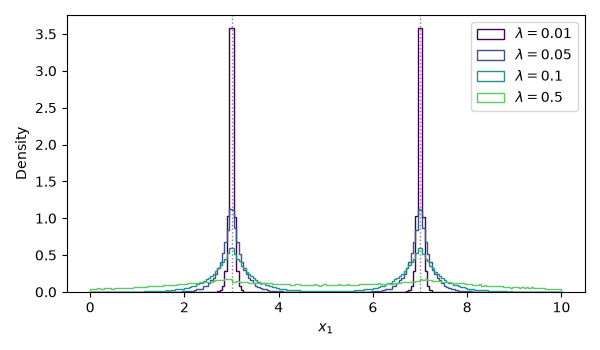
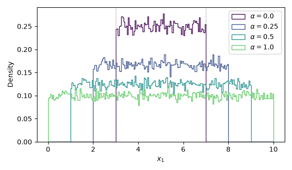
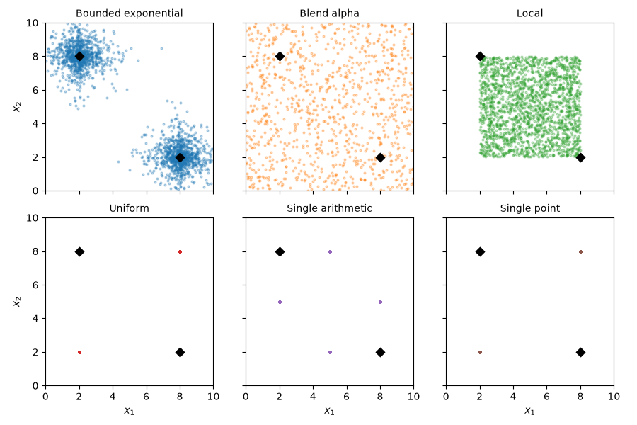
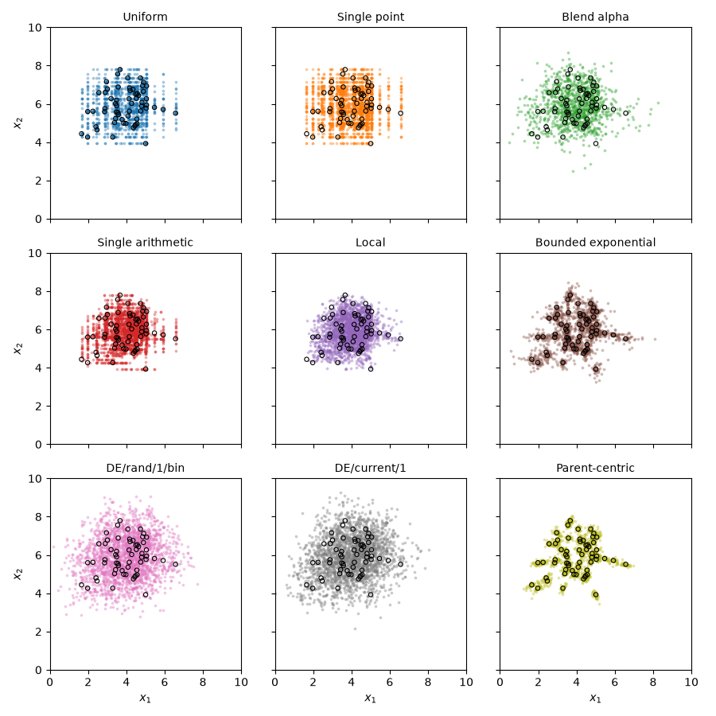
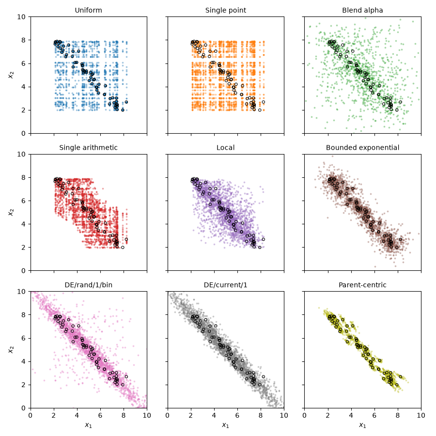
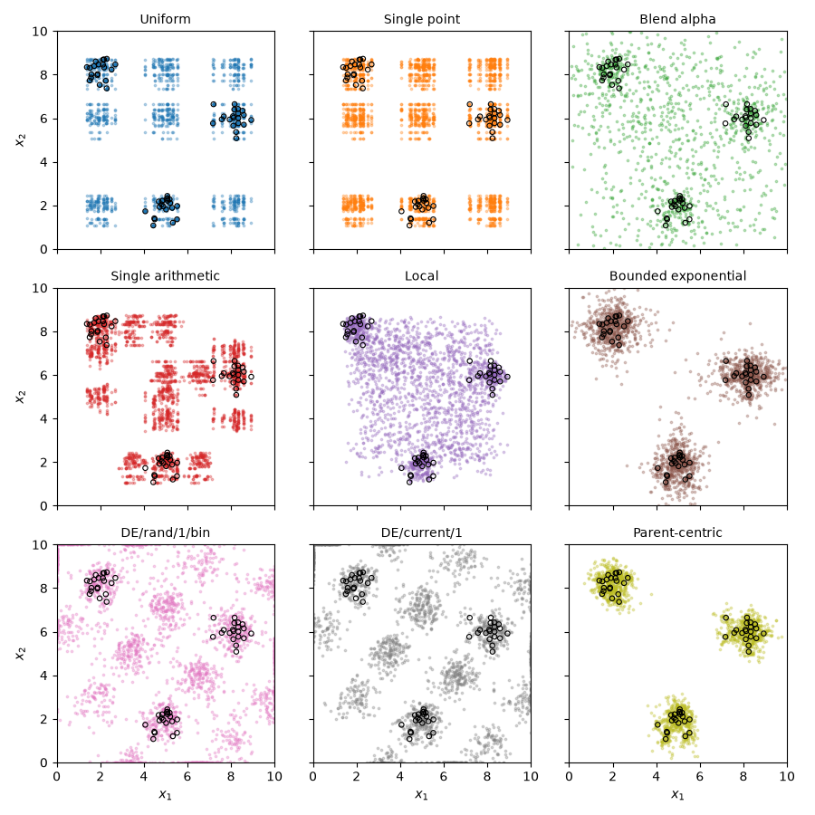

Note
Go to the end to download the full example code.
Crossover Operators#
This example shows the behaviour of the crossover operators, first with two fixed parents and then with a whole population. Each figure crosses over the same parents many times and plots all the offspring.
First we define a few functions useful for plotting.
import matplotlib.pyplot as plt
import numpy as np
import moocore
LOWER, UPPER = 0.0, 10.0
BOUNDS = dict(lower=LOWER, upper=UPPER)
def cross_over(fun, a, b, n_pairs=50_000, **kwargs):
"""Cross over parents ``a`` and ``b`` ``n_pairs`` times."""
parents = np.tile(np.array([a, b], dtype=float), (n_pairs, 1))
return fun(parents, seed=42, **kwargs)
def plot_density(ax, values, **kwargs):
"""Plot the distribution of ``values`` within the bounds."""
ax.hist(
values,
bins=200,
range=(LOWER, UPPER),
density=True,
histtype="step",
**kwargs,
)
def mark_parents(ax, positions):
"""Show the parents as dotted vertical lines."""
for x in positions:
ax.axvline(x, color="gray", linestyle=":", linewidth=1)
Crossover behaviour with two parents#
The parents are \((3, 3)\) and \((7, 7)\) within \([0, 10]^2\). Each panel shows the distribution of the first variable of the offspring for the default parameters of each operator. Uniform and single arithmetic crossover only produce a few distinct values, which appear as spikes. The parent decision variables are shown as dotted vertical lines.
a, b = [3.0, 3.0], [7.0, 7.0]
operators = {
"Bounded exponential": (moocore.bounded_exponential_crossover, BOUNDS),
"Blend alpha": (moocore.blend_alpha_crossover, BOUNDS),
"Local": (moocore.local_crossover, {}),
"Uniform": (moocore.uniform_crossover, {}),
"Single arithmetic": (moocore.single_arithmetic_crossover, {}),
}
fig, axes = plt.subplots(len(operators), 1, figsize=(6, 8), sharex=False)
for i, (ax, (name, (fun, kwargs))) in enumerate(zip(axes, operators.items())):
plot_density(ax, cross_over(fun, a, b, **kwargs)[:, 0], color=f"C{i}")
mark_parents(ax, [a[0], b[0]])
ax.set_title(name, loc="left", fontsize="medium")
ax.set_yticks([])
ax.set_xlabel("$x_1$")
fig.tight_layout()
plt.show()

Bounded exponential crossover#
The bounded exponential crossover operator samples from an exponential
distribution that is truncated at the bounds. The distribution is centred on
one parent, and the distance to the other parent scales its spread. The
offspring moves towards either bound with equal probability. The operator is
symmetric, so the second offspring is centred on the other parent in the same
way. The parameter scale (\(\lambda\)) controls the decay of the
distribution.
fig, ax = plt.subplots(figsize=(6, 3.5))
for i, scale in enumerate([0.01, 0.05, 0.1, 0.5]):
offspring = cross_over(
moocore.bounded_exponential_crossover, a, b, scale=scale, **BOUNDS
)
plot_density(
ax,
offspring[:, 0],
color=plt.cm.viridis(i / 4),
label=rf"$\lambda = {scale}$",
)
mark_parents(ax, [a[0], b[0]])
ax.set_xlabel("$x_1$")
ax.set_ylabel("Density")
ax.legend()
fig.tight_layout()
plt.show()

Blend crossover: the alpha parameter#
BLX-\(\alpha\) samples uniformly from the interval between the parents,
widened by alpha times their distance on each side.
fig, ax = plt.subplots(figsize=(6, 3.5))
for i, alpha in enumerate([0.0, 0.25, 0.5, 1.0]):
offspring = cross_over(
moocore.blend_alpha_crossover, a, b, alpha=alpha, **BOUNDS
)
plot_density(
ax,
offspring[:, 0],
color=plt.cm.viridis(i / 4),
label=rf"$\alpha = {alpha}$",
)
mark_parents(ax, [a[0], b[0]])
ax.set_xlabel("$x_1$")
ax.set_ylabel("Density")
ax.legend()
fig.tight_layout()
plt.show()

Offspring geometry in two dimensions#
With the parents at opposite corners, \((2, 8)\) and \((8, 2)\), the operators differ in which regions of the decision space their offspring can reach. Note that certain operators such as uniform crossover can never explore all possible decision vectors, requiring the use of mutation for proper exploration of the decision space. Moreover, the local crossover operator never produces offspring outside the bounding box defined by the parents, so it is not suitable for exploring the decision space beyond the current population.
a, b = [2.0, 8.0], [8.0, 2.0]
operators = {
"Bounded exponential": (moocore.bounded_exponential_crossover, BOUNDS),
"Blend alpha": (moocore.blend_alpha_crossover, BOUNDS),
"Local": (moocore.local_crossover, {}),
"Uniform": (moocore.uniform_crossover, {}),
"Single arithmetic": (moocore.single_arithmetic_crossover, {}),
"Single point": (moocore.single_point_crossover, {}),
}
fig, axes = plt.subplots(2, 3, figsize=(9, 6), sharex=True, sharey=True)
for i, (ax, (name, (fun, kwargs))) in enumerate(
zip(axes.flat, operators.items())
):
offspring = cross_over(fun, a, b, n_pairs=1000, **kwargs)
ax.scatter(offspring[:, 0], offspring[:, 1], s=4, alpha=0.3, color=f"C{i}")
ax.scatter(*np.array([a, b]).T, marker="D", s=40, color="black")
ax.set_title(name, fontsize="medium")
ax.set_xlim(LOWER, UPPER)
ax.set_ylim(LOWER, UPPER)
ax.set_aspect("equal")
for ax in axes[1]:
ax.set_xlabel("$x_1$")
for ax in axes[:, 0]:
ax.set_ylabel("$x_2$")
fig.tight_layout()
plt.show()

Crossover behaviour with a population#
In an evolutionary algorithm, crossover is applied to a whole population. Here, each operator is applied 40 times to a population of 60 decision vectors (circles), and all the offspring are plotted. Each operator gets the same population, but for each call, the population is randomly permuted and/or a different seed is used.
The first population is a round cloud. Uniform, single-point and single arithmetic crossover place their offspring on lines parallel to the axes, because each offspring copies at least one variable from a parent. Uniform and single-point crossover look alike here only because, with two variables, the cut point always falls between them. With more variables, their distributions differ. Both DE variants spread their offspring beyond the population, whereas parent-centric and bounded exponential crossover keep them close to their parents.
all_operators = {
"Uniform": (moocore.uniform_crossover, {}),
"Single point": (moocore.single_point_crossover, {}),
"Blend alpha": (moocore.blend_alpha_crossover, BOUNDS),
"Single arithmetic": (moocore.single_arithmetic_crossover, {}),
"Local": (moocore.local_crossover, {}),
"Bounded exponential": (moocore.bounded_exponential_crossover, BOUNDS),
"DE/rand/1/bin": (moocore.de_rand_1_bin_crossover, BOUNDS),
"DE/current/1": (moocore.de_current_1_crossover, BOUNDS),
"Parent-centric": (moocore.parent_centric_crossover, BOUNDS),
}
takes_population = {
moocore.de_rand_1_bin_crossover,
moocore.de_current_1_crossover,
moocore.parent_centric_crossover,
}
def plot_population(population, n_calls=40):
"""Plot the offspring of every operator applied to ``population``."""
rng = np.random.default_rng(42)
fig, axes = plt.subplots(3, 3, figsize=(9, 9), sharex=True, sharey=True)
for i, (ax, (name, (fun, kwargs))) in enumerate(
zip(axes.flat, all_operators.items())
):
offspring = []
for _ in range(n_calls):
if fun in takes_population:
x = population
else:
x = rng.permutation(population)
offspring.append(fun(x, seed=rng, **kwargs))
offspring = np.vstack(offspring)
ax.scatter(
offspring[:, 0], offspring[:, 1], s=3, alpha=0.3, color=f"C{i}"
)
ax.scatter(
population[:, 0],
population[:, 1],
s=15,
facecolors="none",
edgecolors="black",
linewidths=0.8,
)
ax.set_title(name, fontsize="medium")
ax.set_xlim(LOWER, UPPER)
ax.set_ylim(LOWER, UPPER)
ax.set_aspect("equal")
for ax in axes[2]:
ax.set_xlabel("$x_1$")
for ax in axes[:, 0]:
ax.set_ylabel("$x_2$")
fig.tight_layout()
plt.show()
rng = np.random.default_rng(42)
round_population = np.clip(rng.normal([4.0, 6.0], 1.2, size=(60, 2)), 0.2, 9.8)
plot_population(round_population)

The second population is stretched along a diagonal, as may happen when a population approaches a Pareto set. Uniform and single-point crossover combine the variables of different parents independently, so their offspring fill the box around the population and lose its diagonal shape. Blend alpha, single arithmetic and local crossover also treat each variable separately and place offspring away from the diagonal. Bounded exponential crossover keeps the offspring close to their parents. Both DE variants and parent-centric crossover follow the diagonal, because they move along differences between parents. DE extends the population beyond its ends, whereas parent-centric crossover stays close to its index parents.
t = rng.uniform(0, 1, size=60)
diagonal_population = np.column_stack([2 + 6 * t, 8 - 6 * t])
diagonal_population += rng.normal(0, 0.25, size=(60, 2))
plot_population(diagonal_population)

The third population consists of three separate clusters of 20 members each, as when the Pareto set is disconnected. Crossing over members of different clusters produces offspring outside the clusters, unless the operator keeps the offspring close to their parents. Uniform and single-point crossover create new clusters at every combination of the clusters’ variable values, and single arithmetic crossover adds clusters at the midpoints of one variable. Blend alpha and local crossover fill the space between the clusters. Both DE variants create new clusters by shifting the original ones by \(F\) times the differences between clusters, and the offspring that are clipped to the bounds pile up on the edges of the box. Bounded exponential and parent-centric crossover keep most offspring near the cluster of their parent.

Total running time of the script: (0 minutes 4.837 seconds)